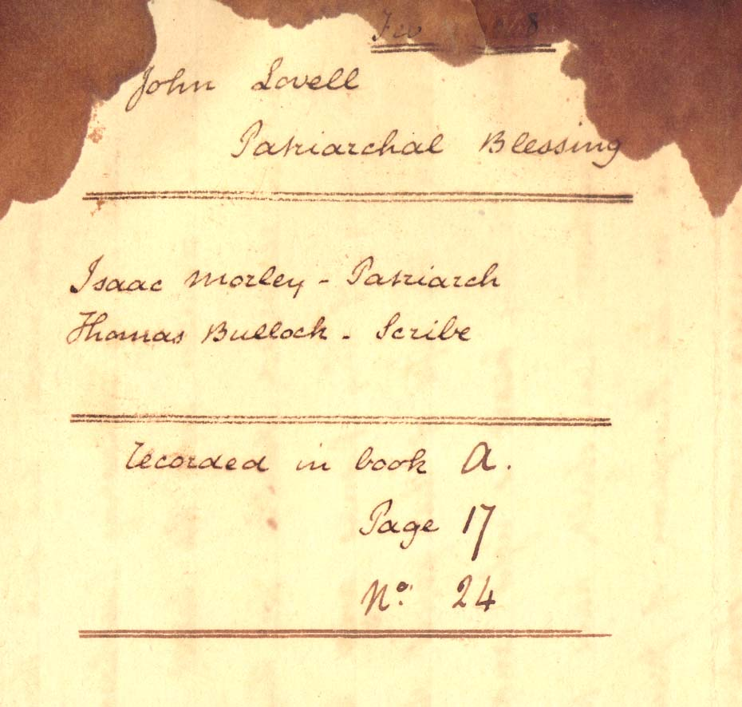
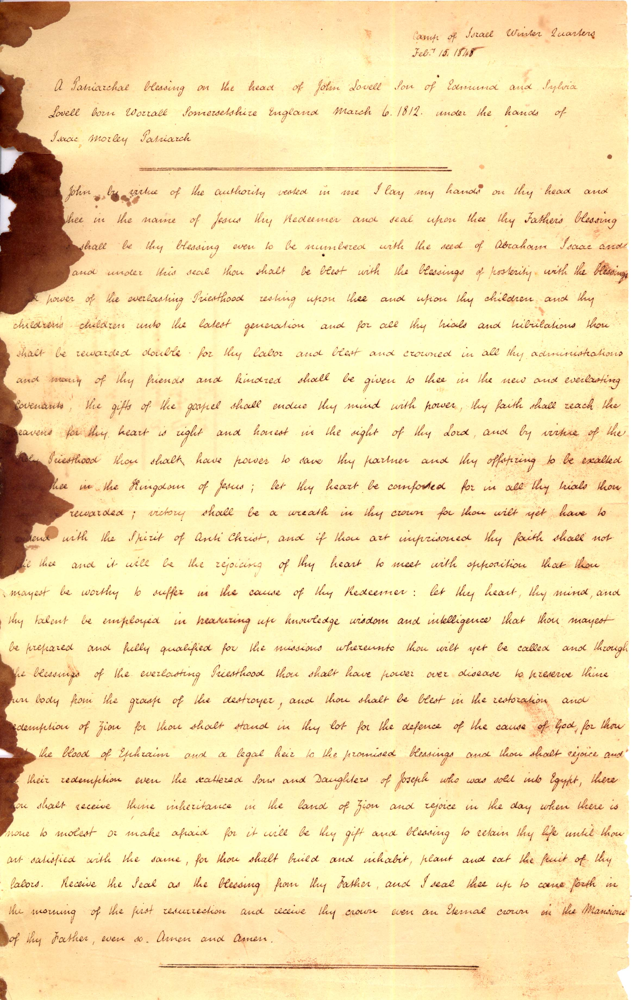
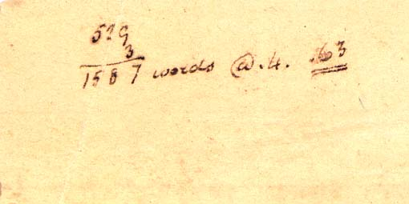

John Lovell Patriarchal Blessing Feb. 15, 1848
==================================
Isaac Morley - Patriarch
Thomas Bullock - Scribe
==================================
Recorded in book A. Page 17 No. 24
==================================
Camp of Israel Winter Quarters
Febr. 15, 1848
A Patriarchal blessing on the head of John Lovell son of Edmund and Sylvia Lovell born Worrall Somersetshire England March 6, 1812 under the hands of Isaac Morley Patriarch==================================
[Brother] John, by virtue of the authority vested in me I lay my hands on thy head and [bless] thee in the name of Jesus thy Redeemer and seal upon thee thy Father's blessing [which] shall be thy blessing even to be numbered with the seed of Abraham Isaac and [Jacob] and under this seal thou shalt be blest with the blessings of posterity with the blessings and power of the everlasting Priesthood resting upon thee and upon thy children and they children's children unto the latest generation and for all thy trials and tribulations thou shalt be rewarded double for the labor and blest and crowned in all thy administrations and many of thy friends and kindred shall be given to thee in the new and everlasting covenants, the gifts of the gospel shall endue they mind with power, thy faith shall reach the heavens for thy heart is right and honest in the sight of thy Lord,and by virtue of the holy Priesthood thou shalt have power to save thy partner and thy offspring to be exalted [with] thee in the Kingdom of Jesus; let thy heart be comforted for in all thy trials thou [shalt be] rewarded; victory shall be a wreath in thy crown for thou wilt yet have to contend with the Spirit of Anti Christ, and if thou art imprisoned thy faith shall not fail thee and it will be the of the rejoicing of thy heart to meet with opposition that thou mayest be worthy to suffer in the cause of thy Redeemer: let thy heart, thy mind, and thy talent be employed in treasuring up knowledge wisdom and intelligence that thou mayest be prepared and fully qualified for the missions whereunto thou wilt yet be called and through the blessings of the everlasting Priesthood thou shalt have power over disease to preserve thine own body from the grasp of the destroyer, and thou shalt be blest in the restoration and redemption of Zion for thou shalt stand in thy lot for the defence of the cause of God, for thou art the blood of Ephraim and a legal heir to the promised blessings and thou shalt rejoice and [see] their redemption even the scattered Sons and Daughters of Joseph who was sold into Egypt, there thou shalt receive thine inheritance in the land of Zion and rejoice in the day when there is none to molest or make afraid for it will be thy gift and blessing to retain thy life until thou art satisfied with the same, for thou shalt build and inhabit, plant and eat the fruit of thy labors. Receive the Seal as the blessing from thy Father, and I seal thee up to come forth in the morning of the first resurrection and receive thy crown even an Eternal crown in the Mansions of thy Father, even so, Amen and Amen.
=======================================
529
3
----
1587 words @ .4. 163
[Transcribed Feb/Mar 2000 by Joseph F. Buchanan]